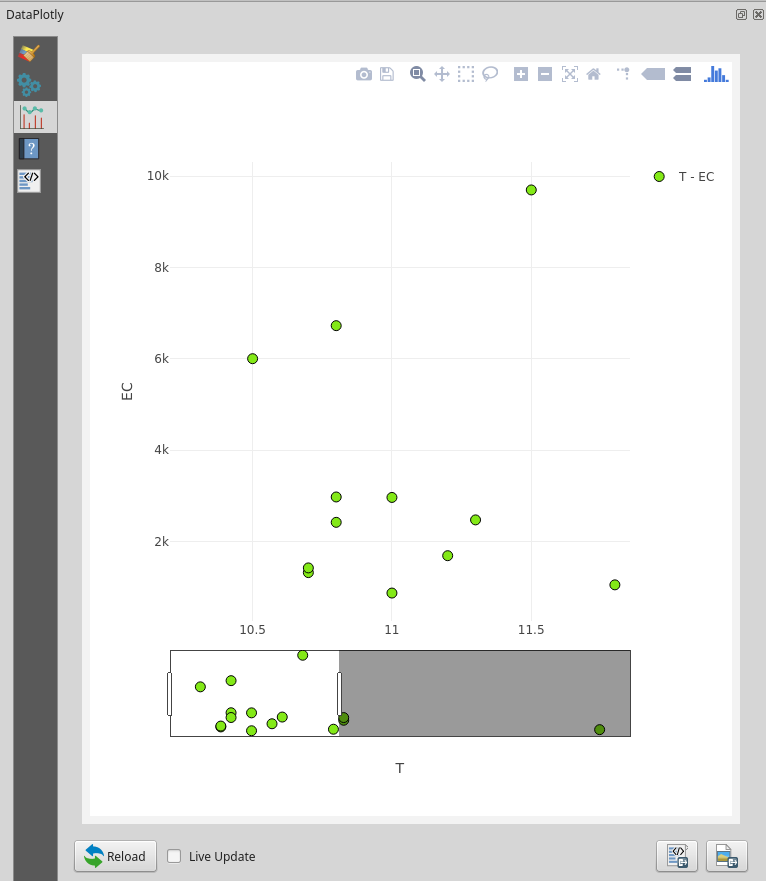

Scatter Plot
Here you will find the guide to every parameter of the scatter plot. If you need more generic information please see DataPlotly Basic Usage.

Plot Properties
Layer: the combobox will display all the vector layers loaded in QGIS
X Field: the X field
Y Field: the Y field
Marker Color: marker color
Data Defined Override: you can add an Expression to define the size of the marker.
If activated other options are available: Color Scale, Visible and Invert Color.
Marker Size: the size of the marker
Data Defined Override: you can add an Expression to define the size of the marker
Stroke Color: border color
Stroke Width: the width of the border
Marker Type: choose between Points, Lines or Points and Lines
Point Type or Line Type depending on the Marker Type chosen
Transparency: transparency level of the point/line
Plot Customizations
Show Legend: show the legend of the current plot
Horizontal Legend: check if you want to have an horizontal legend
Show Range Slider: add a slider below the plot


Plot Title: the plot title
Legend Title: the title of the legend
X Label: X label text
Y Label: Y Label text
Hover Infos: choose the information that will be shown when hovering on
the Plot Canvas
Additional Hover Label: choose another field of the plot (or other values)
that will be shown together with the other informations. This field supports
expressions: e.g. 'The ID of this point is ' || ID:

Invert X Axis: check if you want to invert the ordering of the x axis
X Axis Mode: choose between Linear, Logarithmic or Categorized
Invert Y Axis: check if you want to invert the ordering of the y axis
Y Axis Mode: choose between Linear, Logarithmic or Categorized